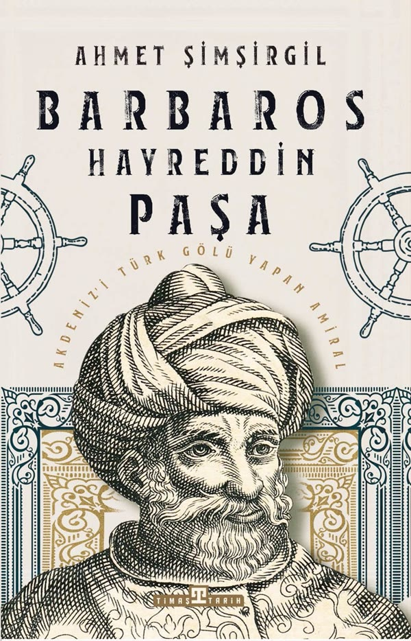
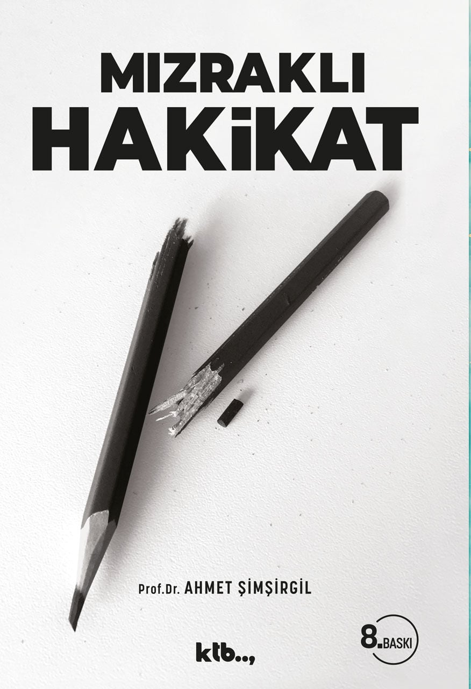
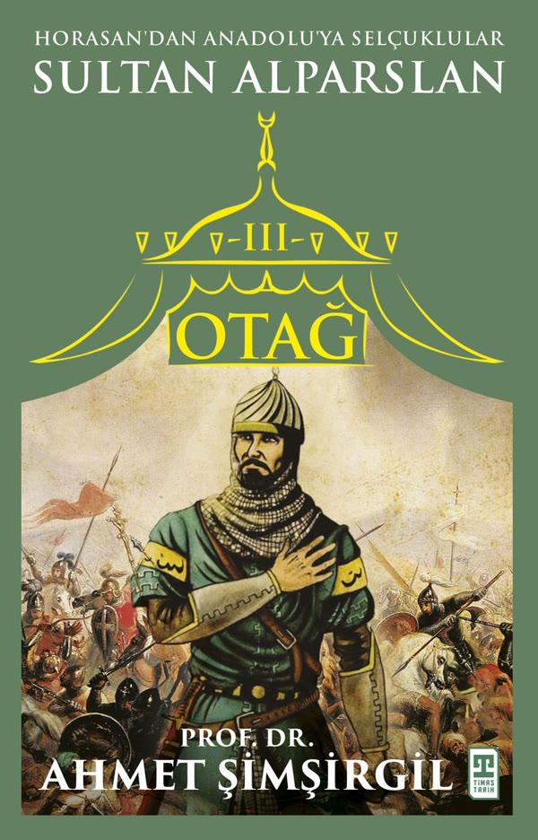
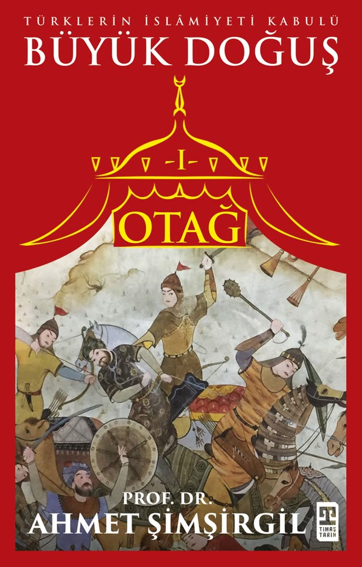
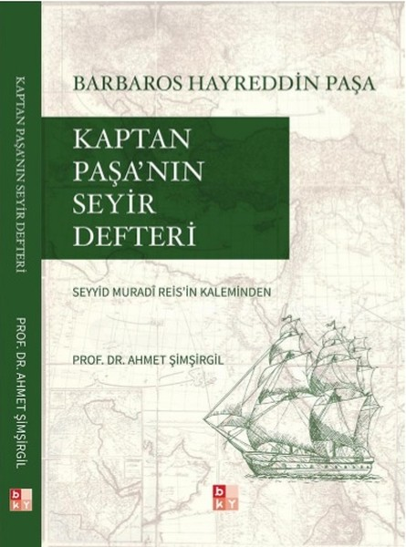
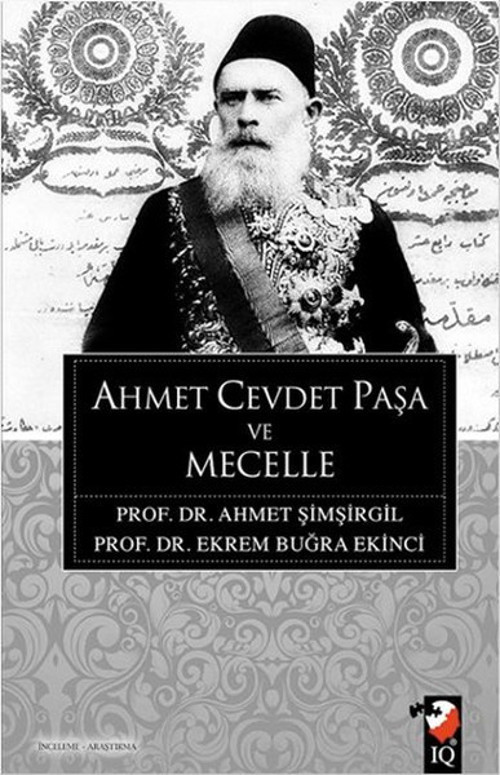

الكتب


Adalet Ustaları
شراء

Hâkimiyet Sembolü Ayasofya Camii
شراء

Otağ V: Selahaddin Eyyûbî
شراء

Topkapı Sarayı
شراء

İstanbul ve Feth-i Mübîn
شراء

Otağ IV: Hindistan Fatihi Gazneli Mahmud
شراء

Barbaros Hayreddin Paşa: Akdeniz'i Türk Gölü Yapan Amiral
شراء
كل الكتب

Eşrefoğlu Rûmî
شراء

Osmanlı Gerçekleri 3: Sorularla Osmanlı'yı Anlamak
شراء

Edep Yâ Hû
شراء

En Sevgili Efendimiz ve Sevdalıları
شراء

Mızraklı Hakikat
شراء

Kayı 11: Elveda
شراء

Otağ III: Sultan Alparslan
شراء

Kayı 10: II. Abdülhamid Han
شراء

Osmanlı Gerçekleri 2: Sorularla Osmanlı'yı Anlamak
شراء

Kayı 9: Sonun Başlangıcı
شراء

Otağ I: Büyük Doğuş
شراء

Otağ II: Emir Timur
شراء

Kayı 8: Islahat, Darbe ve Devlet
شراء

Osmanlı Gerçekleri 1: Sorularla Osmanlı'yı Anlamak
شراء

Kayı 7: Kutsal İttifaka Karşı
شراء



Kaptan Paşa'nın Seyir Defteri (Gazavât-ı Hayreddin Paşa)
شراء

Ahmet Cevdet Paşa ve Mecelle
شراء
البرامج
الحلقات الأكثر مشاهدة

التاريخ والتأمل
هل ينحدر العثمانيون من الأوغوز؟
Ahmet Şimşirgil 16:46

التاريخ والتأمل
تقلد عثمان سيف الدين
Ahmet Şimşirgil 17:39

التاريخ والتأمل
عام قيام الدولة: 1299
Ahmet Şimşirgil 12:27

التاريخ والتأمل
عبد العزيز خان: الدولة والانقلاب والخيانة!
Ahmet Şimşirgil 14:12

التاريخ والتأمل
من الشرق أتيت واسمي أرطغرل!
Ahmet Şimşirgil 16:20

التاريخ والتأمل
بالأدب يستقيم نظام العالم!
Ahmet Şimşirgil 13:05
أحدث الحلقات

التاريخ والتأمل
فتح بورصة
Ahmet Şimşirgil 12:27

التاريخ والتأمل
الدولة لا تقبل الانقسام!
Ahmet Şimşirgil 12:33

التاريخ والتأمل
دستور الدولة العثمانية!
Ahmet Şimşirgil 14:51

التاريخ والتأمل
تذكر: أنت ابن أرطغرل وعثمان!
Ahmet Şimşirgil 12:24

التاريخ والتأمل
فرق الجهاد في عهد عثمان بك
Ahmet Şimşirgil 8:52

التاريخ والتأمل
كيف أسلم قائد الغزاة الشهير ميخال غازي؟
Ahmet Şimşirgil 14:03

التاريخ والتأمل
الدولة الرومانية الشرقية في مواجهة عثمان بك
Ahmet Şimşirgil 13:48

التاريخ والتأمل
أحي الإنسان لتحيا الدولة
Ahmet Şimşirgil 11:21
التاريخ والتأمل
عام قيام الدولة: 1299
Ahmet Şimşirgil 12:27

التاريخ والتأمل
جئنا إلى هذه الديار غرباء!
Ahmet Şimşirgil 12:36

التاريخ والتأمل
نداء النوبة: نحن مستعدون للغزو
Ahmet Şimşirgil 11:28

التاريخ والتأمل
الفتوحات الأولى لأبطال قايي
Ahmet Şimşirgil 12:09